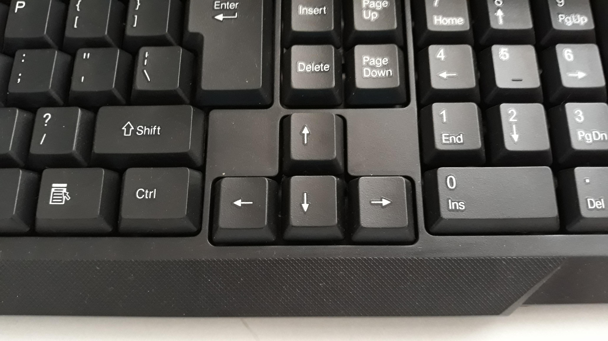
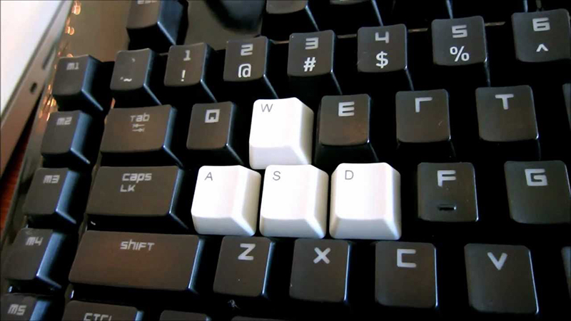
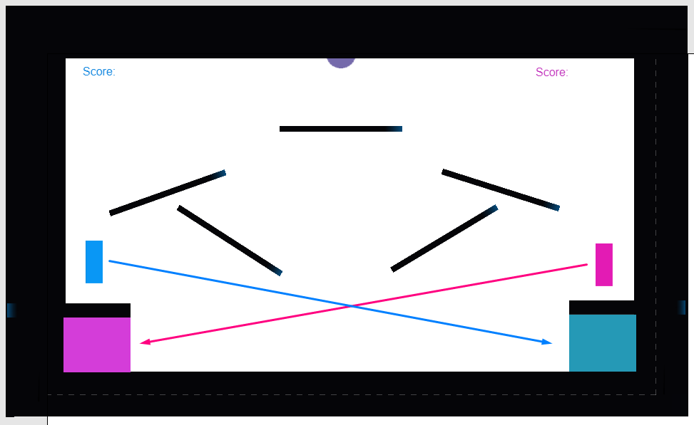

Construct 3 Introduction Game Instructions
To Play...
The Blue Player's controls are determined by the arrow keys. To move the player to the left, press the left arrow key. To move the player to the right, press the right arrow key.

The Pink Player's controls are determined by the WASD keys. To move the player to the left, press the W key. To move the player to the right, press the D key.

To Win...
The goal is to score more points than the other player. To do so, use your player to move the ball into your corresponding goal. The Pink Player should shoot the ball into the Pink Goal. The Blue Player should shoot the ball into the Blue Goal.

Remember to use objects in the enviornment. Remember the game does not stop until the users decide to stop playing. Remeber to watch the scores in the upper corners. And remember to try your best!
Home Page